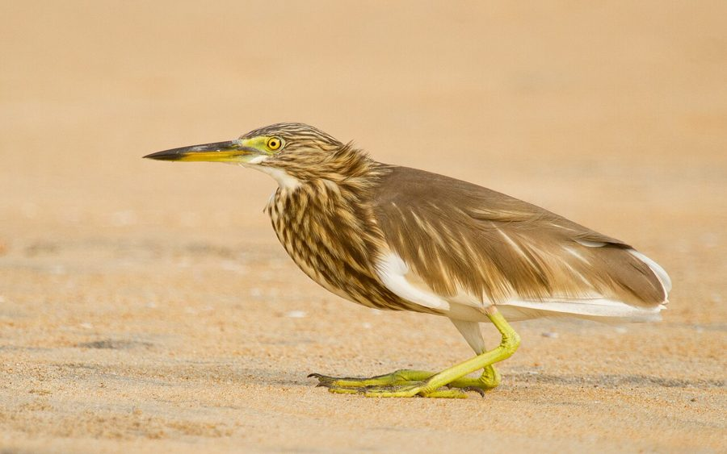

बगुलाIndian Pond Heron
Ardeola grayii · Ardeidae · BRD-0004

- Scientific name
- Ardeola grayii (Sykes, 1832)
- Family
- Ardeidae
- Hindi
- बगुला / अंधा बगुला
- Status here
- native
- IUCN
- LC
When to look कब देखें
Season not recorded.
बगुला / Indian Pond Heron
Ardeola grayii (Sykes, 1832) — Ardeidae
बगुला — तालाब के किनारे झुका हुआ, मटमैला भूरा पक्षी जिसे सब अनदेखा कर देते हैं — जब तक यह पंख न खोले और अचानक चमकीले सफेद रंग के साथ न उड़ जाए। यह पूर्वी उत्तर प्रदेश के तालाबों और धान के खेतों का सबसे सफल घात लगाने वाला जलीय शिकारी है।
हिंदी परिचय Hindi Overview
बगुला (Ardeola grayii) पूर्वी उत्तर प्रदेश के हर तालाब, हर धान के खेत और हर नहर के किनारे मिलता है। इसका नाम "अंधा बगुला" इसलिए पड़ा क्योंकि यह पानी में इतना स्थिर खड़ा रहता है कि लगता है कुछ देखता ही नहीं — लेकिन यह वास्तव में अत्यंत सावधानी से शिकार पर नज़र रखता है।
जब यह बैठा होता है तो भूरा और छोटा दिखता है — लेकिन जैसे ही उड़ता है, इसके सफेद पंख अचानक दिखाई देते हैं, जो शिकारी और इंसान दोनों को चौंका देते हैं। यही इसका सबसे चौंकाने वाला गुण है।
यह मछली, मेंढक, टैडपोल, केकड़े, और बड़े कीड़े खाता है। यह तालाब के स्वास्थ्य का एक अच्छा संकेतक है — जहाँ बगुला नियमित आता है, वहाँ तालाब में जीवन है।
Quick Identification त्वरित पहचान
| Feature | Description |
|---|---|
| Size | Medium-sized wading bird (40–46 cm tall); hunched, short-necked posture at rest |
| Plumage (perched) | Cryptic dull earthy brown-buff; matches dry mud and bank vegetation |
| Plumage (in flight) | Sudden flash of brilliant pure white wings, rump, and tail |
| Bare parts | Yellowish-green legs; bill yellow at base with a dark tip |
| Behaviour | Stands completely motionless for long minutes at water margins before an explosive strike |
| Habitat | Ponds, paddy fields, seasonal ditches, and sluggish canals |
Field tip: A brown bird standing dead still by water, practically invisible. When approached, it flies away showing surprisingly bright, clean white wings. Learn to spot the hunched posture. In breeding season (May–August), its back turns a rich deep maroon and it grows white plumes.
Morphology आकृति विज्ञान
Biometrics:
| Measurement | Range |
|---|---|
| Total length | 420–460 mm |
| Wing (flattened chord) | 190–215 mm |
| Tail | 70–80 mm |
| Tarsus | 50–60 mm |
| Bill (culmen from base) | 55–65 mm |
| Weight | 220–270 g |
Size: 40–46 cm tall; wingspan 75–90 cm. Weight 230–280 g.
Plumage (non-breeding): Body buff-brown with darker streaks on neck and breast. Wings, rump, and tail pure white — concealed when at rest under closed wings, fully exposed in flight.
Plumage (breeding, May–August): Develops a deep maroon-brown back, buff neck, and longer plumes on the crown and back. Crown becomes rusty cinnamon. Bill base turns blue.
Bill: Long, dagger-shaped, yellowish with a black tip. Built for fast strikes.
Legs: Yellowish-green, long; held trailing behind in flight.
Eyes: Yellow iris; forward-facing when hunting (binocular vision for strike accuracy).
Sexes: Look identical. Juveniles duller, more streaked.
Vocalisations. Three main call types:
- Contact and alarm call: A harsh, sudden croak described as wah-koo or grating karrr given when startled and taking off; frequency 0.8–2.0 kHz.
- Song: Soft, low billing, bubbling, or rattling sounds produced by pairs at the nest during breeding season.
- Aggressive call: Sharp clicking and harsh croaking notes given when defending feeding territories from other herons.
हिंदी: बैठे रहने पर पंख छुपे रहते हैं — इसलिए बगुला छोटा और भूरा दिखता है।
उड़ान में पंख खुलने पर सफेद चमक — यही दृश्य चौंकाता है।
प्रजनन काल में पीठ गहरी मरून हो जाती है।
The "Andha Bagula" Behaviour "अंधा बगुला" का व्यवहार
The name andha bagula (blind heron) is one of the most well-known descriptive names in UP — and it tells us about both the bird and how villagers observe it.
The heron stands completely motionless at the water's edge — sometimes for 5 to 15 minutes without moving a muscle. The neck is folded into an S-shape and held still. Eyes are fixed on the water. To a passing observer, the bird appears to be doing nothing — half-asleep, or "blind" to its surroundings.
This is ambush hunting. The stillness is the technique. Small fish, frogs, and tadpoles are wary of moving shadows and rapid motion; a stationary bird becomes part of the landscape. When prey drifts within range, the strike is faster than the eye can follow — a single explosive lunge with the dagger-like bill.
The contrast between the apparent stillness and the explosive strike is the most distinctive aspect of heron behaviour worldwide. Andha bagula — apparently blind, actually concentrating with extreme focus.
हिंदी — "अंधा बगुला" क्यों?
यह पानी के किनारे 15 मिनट तक भी हिले बिना खड़ा रह सकता है — गर्दन मुड़ी हुई, आँखें पानी पर टिकीं।
देखने वालों को लगता है कि यह सो रहा है या "अंधा" है।
असल में यह घात लगाकर शिकार कर रहा है — और जब मछली या मेंढक पास आता है, तो बिजली की रफ़्तार से चोंच मार देता है।
ठहराव ही इसकी तकनीक है।
Ecological Role पारिस्थितिक भूमिका
Aquatic predator: Pond herons regulate populations of small fish (Puntius, Aplocheilus, juvenile Channa), tadpoles, adult frogs, small toads, freshwater crabs, and large aquatic insects (dragonfly larvae, water bugs). A single adult may take 50–100 prey items per day during the active season.
Frog and tadpole control: In the monsoon, when amphibians breed in temporary pools, pond herons concentrate on tadpole-dense water. This is significant for understanding amphibian recruitment — heron predation is one of the main bottlenecks for Asian Common Toad (Duttaphrynus melanostictus) and Indian Bull Frog tadpole survival.
Dragonfly predator: Takes adult Wandering Gliders (Pantala flavescens) and other dragonflies when they fly low or perch near water. Also catches dragonfly larvae underwater.
Pond health indicator: Pond herons require live aquatic prey. Their consistent presence indicates a pond with a healthy food web — fish, amphibians, and insects all reproducing. Their absence from a pond that should support them is an early indicator of ecological collapse (often from pesticide runoff or fish kills).
Prey of: Marsh harriers, large mongooses, feral cats (eggs/chicks); rat snakes (Ptyas mucosa) raid nests.
हिंदी: बगुला तालाब के स्वास्थ्य का संकेतक है।
जहाँ बगुला नियमित आता है — वहाँ तालाब में मछली, मेंढक, और कीड़े हैं।
जहाँ बगुला नहीं आता — वहाँ कुछ गड़बड़ है (कीटनाशक, मछली मारना, या प्रदूषण)।
Life Cycle / Phenology जीवन चक्र
Resident: Present year-round in eastern UP; does not migrate.
Breeding season: June–September (monsoon) — synchronized with peak prey availability (amphibians breeding, paddies flooded).
Nesting: Colonial — small to medium heronries in tall trees, often shared with cattle egrets, little egrets, and night herons. Common nest trees: tamarind, peepal, banyan, neem, eucalyptus.
Nest: Loose platform of twigs, 25–40 cm across; placed 6–15 m above ground in tree forks.
Eggs: 3–5 pale blue-green eggs; both parents incubate ~22–24 days.
Chicks: Altricial — hatched naked and blind. Fed regurgitated fish and frogs by both parents. Fledge in 6 weeks. Independent at ~2 months.
Roosting: Communal night roosts in tall trees — sometimes hundreds of pond herons (with egrets) gather at dusk in a single tree near a water body.
हिंदी: यह पूर्वी UP में पूरे साल रहता है — प्रवासी नहीं है।
मानसून (जून-सितंबर) में प्रजनन — जब मेंढक और मछलियाँ सबसे ज़्यादा होते हैं।
कई बगुले एक ही पेड़ पर साथ-साथ घोंसले बनाते हैं — इसे heronry कहते हैं।
शाम को बहुत से बगुले एक ही पेड़ पर सोने आते हैं।
Prey भोजन
| Prey | Hindi | Where Caught |
|---|---|---|
| Small fish (Puntius spp., Aplocheilus spp.) | छोटी मछली, पिल्ली मछली | Pond margins, paddies |
| Tadpoles | टैडपोल / डेंडुक के बच्चे | Temporary monsoon pools |
| Adult frogs and small toads | मेंढक, छोटे टोड | Pond banks |
| Freshwater crabs | केकड़े | Canal banks, paddy edges |
| Dragonfly adults and larvae | व्याधपतंग | Over water |
| Water bugs, beetles | जल कीड़े | Open water surface |
| Earthworms (occasionally) | केंचुआ | Wet field margins |
हिंदी: बगुला छोटी मछली, मेंढक, टैडपोल, और बड़े कीड़े खाता है — तालाब का सक्रिय शिकारी है।
Agricultural / Human Relevance कृषि और मानव संबंध
Beneficial in paddies: Pond herons follow rice planting and harvest — feeding on insects, small fish, and frogs in flooded fields. They are a free, natural pest controller. Some studies estimate herons remove significant numbers of paddy pests (mole crickets, planthoppers, juvenile grasshoppers).
Neutral cultural status: Unlike Sarus Crane (sacred) or Indian Roller (auspicious), the pond heron has little cultural baggage. The name andha bagula is mildly mocking ("blind heron") but the bird itself is not persecuted, hunted, or revered.
Pesticide vulnerability: Pond herons accumulate aquatic pesticides through their fish/amphibian prey. Heronry decline near intensively sprayed fields is a documented pattern — they are top-of-aquatic-food-chain bioaccumulators.
Heronry trees protected by tradition: In many villages, the tree where herons and egrets nest is left undisturbed during the breeding season — a folk conservation practice that should be documented and recognized.
हिंदी: बगुला धान के खेत में कीड़े और छोटी मछलियाँ खाता है — खेती के लिए उपयोगी है।
गाँवों में जहाँ बगुले घोंसले बनाते हैं, उस पेड़ को आमतौर पर नहीं काटा जाता — यह एक अच्छी पुरानी परंपरा है।
कीटनाशकों का असर — मछली के माध्यम से बगुले के शरीर में जमा होता है।
Expected Locally स्थानीय रूप से अपेक्षित
Not a field record. Written from published accounts for eastern Uttar Pradesh. No confirmed local sighting yet — if you have seen it, that is what the atlas needs.
अभी तक स्थानीय पुष्टि नहीं। यह विवरण प्रकाशित स्रोतों से है, किसी अवलोकन से नहीं।
Extremely common and easily observed at the edges of every village pond, wetland, and flooded agricultural field across Basti district. The quiet ambush hunting behaviour is a daily sight. Roosts containing up to fifty individuals have been noted in mature Banyan and Peepal trees near wetlands.
Distribution वितरण
Global range: Widespread across the Oriental region, from eastern Iran and Oman through the Indian subcontinent (Pakistan, India, Nepal, Bhutan, Bangladesh, Sri Lanka, Maldives) to Myanmar.
In India: Widespread throughout the plains, valleys, and peninsular regions of India, extending up to about 1,500 m elevation in the foothills of the Himalayas.
In Uttar Pradesh: Abundant year-round resident across all districts of Uttar Pradesh, heavily associated with all forms of freshwater wetlands, ponds, and irrigated fields.
In Basti district / eastern UP: Extremely common resident throughout Basti district; found on almost every village pond (talaabs), paddy field, irrigation ditch, and seasonal puddle.
Range notes: No significant range changes documented.
Research Questions शोध प्रश्न
Anyone can investigate these | कोई भी इन प्रश्नों की जाँच कर सकता है
- How long does a pond heron stand motionless before its first strike? / बगुला पहली चोंच मारने से पहले कितनी देर खड़ा रहता है? — Time 5 successful and 5 unsuccessful hunts. Builds a behavioural dataset.
- What is the prey hit rate? / कितनी बार चोंच मारता है और कितनी बार शिकार पकड़ता है? — Watch a hunting bird for 20 minutes. Record every strike and whether it succeeded.
- Where are the heronries in your village? / आपके गाँव में बगुले कहाँ घोंसले बनाते हैं? — Map every tree with active heron/egret nests during June–September. This is critical baseline data.
- Are heronries declining? / क्या बगुलों के घोंसले कम हो रहे हैं? — Compare current heronry sites with what elders remember from 20 years ago. Document tree losses.
- Do paddy fields with herons have fewer pest insects? / जहाँ बगुले आते हैं उन धान खेतों में कीड़े कम होते हैं? — Compare heron-visited and heron-absent paddies for pest density.
Similar Species मिलती-जुलती प्रजातियाँ
| Species | How to tell apart | हिंदी |
|---|---|---|
| Cattle Egret (Bubulcus ibis) | All white year-round; follows cattle; not water-dependent | गाय बगुला / सफेद बगुला |
| Little Egret (Egretta garzetta) | Pure white, slender, black bill and legs, yellow feet; active hunter | छोटा सफेद बगुला |
| Striated Heron (Butorides striata) | Smaller, darker green-grey, found in denser cover | हरा बगुला (कम आम) |
| Black-crowned Night Heron (Nycticorax nycticorax) | Stockier, grey-and-black, nocturnal; red eyes | रात बगुला |
| Chinese Pond Heron (Ardeola bacchus) | Vagrant only; deeper chestnut breeding plumage | भारत में दुर्लभ |
Field rule: A short-necked, hunched brown heron at the water's edge in eastern UP — that flashes brilliant white wings when it flies — is almost certainly Ardeola grayii. The "brown sitting, white flying" colour change is the most reliable single feature.
Taxonomy & Classification वर्गीकरण
Original description. Ardeola grayii was described as Ardea grayii by Colonel W.H. Sykes in 1832 in his catalogue of birds from the Deccan (Proceedings of the Committee of Science and Correspondence of the Zoological Society of London, 2: 158). Type locality: Deccan, India. The genus name Ardeola is a Latin diminutive meaning "little heron". The species epithet grayii honours the British zoologist John Edward Gray.
Subspecies. Monotypic — no subspecies are currently recognised.
Family and order placement. This species belongs to the order Pelecaniformes and family Ardeidae (herons, egrets, and bitterns). Ardeidae is a large, cosmopolitan family of wading birds containing approximately 64 species. The genus Ardeola (pond herons) contains 6 species of small, cryptically coloured herons distributed across the Old World.
Phylogenetic notes. Molecular studies (such as those by Chang et al., 2003, and subsequent mitochondrial DNA phylogenies) show that the genus Ardeola is monophyletic and closely related to the genus Bubulcus (egrets). Ardeola grayii is a sister species to the Chinese Pond Heron (Ardeola bacchus) and the Javan Pond Heron (Ardeola speciosa).
IUCN status rationale. Assessed as Least Concern (LC). The species has an extremely large geographical range and a very large, stable population that shows no signs of range-wide decline, as it benefits from human-modified wetland habitats like irrigated rice fields.
Photo Gallery फोटो गैलरी
फोटो निर्देश: सुबह के समय तालाब के किनारे आसानी से मिलते हैं। उड़ान की फोटो लें — सफेद पंख दिखाने के लिए। प्रजनन काल (जुलाई-अगस्त) में मरून पीठ की फोटो ज़रूरी।
Photos needed आवश्यक फोटो
- [ ] Resting at pond edge — showing cryptic brown plumage (आराम — भूरा रंग)
- [ ] In flight — showing white wings and tail (उड़ान — सफेद पंख)
- [ ] Strike sequence — bird mid-lunge (चोंच मारते हुए)
- [ ] Breeding plumage — maroon back, longer crown plumes (प्रजनन रंग)
- [ ] Heronry — multiple birds on nesting tree (heronry — पेड़ पर कई बगुले)
- [ ] With prey in bill — fish, tadpole, or frog (शिकार के साथ)
Atlas Connections संबंधित प्रजातियाँ
- Indian Lotus — common foraging habitat; pond herons hunt from lotus leaves and stems (FLR-0005)
- Asian Common Toad — direct predator of toad tadpoles in temporary monsoon pools (AMP-0001)
- Wandering Glider — preys on adult dragonflies near water; both share monsoon pond habitat (INS-0002)
- Sarus Crane — fellow wetland bird; both indicators of pond and paddy health (BRD-0002)
- Peepal — common nest/roost tree for heronries (FLR-0006)
- Mound-building Termite — opportunistic feeder at alate swarms in paddies and wet ground (SFL-0001)
References संदर्भ
- Sykes, W.H. (1832). Catalogue of birds of the Dukhun. Proceedings of the Committee of Science and Correspondence of the Zoological Society of London, 2, 77–149. [original description]
- Ali, S. & Ripley, S.D. (1987). Handbook of the Birds of India and Pakistan. Vol. 1. Oxford University Press, New Delhi.
- Grimmett, R., Inskipp, C. & Inskipp, T. (2011). Birds of the Indian Subcontinent. 2nd ed. Christopher Helm, London.
- Rasmussen, P.C. & Anderton, J.C. (2005). Birds of South Asia: The Ripley Guide. Smithsonian Institution, Washington.
- Subramanya, S. (1996). Distribution, status and conservation of Indian heronries. Journal of the Bombay Natural History Society, 93(3), 459–486.
- Chang, Q. et al. (2003). Phylogenetic relationships among three species of pond herons. Acta Zoologica Sinica, 49(2), 205-212.
- IUCN Red List of Threatened Species — Ardeola grayii.
- GBIF Occurrence Data — Ardeola grayii, Uttar Pradesh (2010–2025).
Source file: species/fauna/birds/indian_pond_heron.md